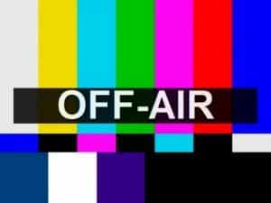

< < < Back
Talk Radio Host Michael Savage Is The Latest Casualty Of Leftist Censorship – Return Of Kings
Popular talk radio host Michael Savage, whose nationalistic message of Borders, Language, and Culture surely chafes the elites’ asses and their dreams of homogenizing the world into one mass of microchipped cattle, was suddenly taken off the air Monday. The incident happened when Savage, who holds degrees in medical botany and epidemiology was discussing the Parkinson’s Disease drug Levodopa, and it’s possible side effects on a twitchy and fainting Sick Hillary.
The incident taking Savage off the air nationwide was initially chalked up to ISDN problems, but it was strange that it came hours before the debates were scheduled to begin and Sick Hillary’s campaign continues suppressing news about her checkered medical history.
Soon after making comments suggesting Hillary could have Parkinson’s Disease, and attempting to start a scientific discussion about the symptoms we’ve seen the Demoncat candidate display as well as known side effects from Levodopa and other drugs, Savage was abruptly taken off the air on his biggest affiliate, WABC in New York City and replaced with two low-rated hosts who said they conducted a coup on him. Almost immediately following his removal from the airwaves in New York City, he was then taken off the air on an additional 400 affiliates around the nation and replaced with an older, recorded broadcast of The Savage Nation.
What makes this incident intriguing is that it’s just another in a long, long line of convenient “accidents” that happen to the Clintons’ opposition. This certainly isn’t the first such incident, as a trail of “suicides” have been piling up behind the Clinton crime family for 30 years.

This program has been determined inappropriate to the narrative by Big Brother
Savage quickly fired off an email about the situation to the press, expressing the belief there was much more behind the incident than technical problems:
Pure sabotage. No advance notice from me or my producers. Then ‘ISDN problems’ during my discussion of the side effects of Levodopa, used for treating Parkinson’s. Then the two fill-ins trying to sound informed and clever from WABC who have 40% lower ratings than me, boasting on air during my hours that they conducted a ‘coup’ by taking Savage off the air.
Savage has a weekly audience that reaches about 20 million people, making him one of the top rated talk radio hosts in the nation. He also has the largest talk show following online, with his show being the most popular amongst those who stream audio. His conservative opinions have often made him a lightning rod for criticism by Social Justice Warriors. Since he has often claimed to be “To the right of Rush and to the left of God” he would likely be one of the first targets in a campaign of censorship, one Matt Drudge has been sounding the alarm about.
Savage’s show is syndicated by Cumulus Media, a corporate media entity which owns 570 radio stations nationwide.
Clinton clearly has serious medical issues, but the issue has been censored and even ridiculed by mainstream media, and there has clearly been a concerted effort by the media to suppress her sickliness. The press has routinely ridiculed those questioning Queen Hillary’s health, and even labeled them “healthers” for months before video of her fainting and collapsing surfaced, forcing the propagandists in the media to back off.
There have been other high-profile incidents of either direct or indirect censorship of this major campaign issue, Hillary’s Health, an issue Lester Dolt of NBC didn’t bring up at the debate only hours after Savage’s expose had “technical problems.”
Perhaps Savage is lucky he didn’t “commit suicide” as so many of the Clintons’ enemies do.
More Censorship Over Clinton’s Health

Dr. Drew was booted from CNN shortly after questioning Hillary’s health
Savage’s possible censorship is not without precedent. Dr. Drew Pinsky was recently fired from CNN after questioning Hillary’s health before video of her collapsing on at 9/11 memorial ceremonies surfaced. A source close to Dr. Drew told the press the producers of the show immediately started receiving strange phone calls after he Pinsky publicly questioned Hillary’s health.
First, they demanded he retract his comments, but he wouldn’t… It was downright scary and creepy.
Beyond the well-documented Dr. Drew incident with CNN, The Huffington Post (led by a barely legal editorial team of post-pubescent, mostly white girls who claim to be the model of diversity – LOL) recently fired and banned journalist David Seaman for posting an opinion piece about Hillary’s health, an article that was trending and was ranked #3 on the site when it was abruptly taken down only hours after it was posted.
Seaman, who is well experienced in online journalism said:
Both of my articles have been pulled without notice of any kind, just completely deleted from the Internet, and both of those articles mentioned Hillary’s health. I’ve filed hundreds of stories over the years as a journalist and I’ve never had anything like this happen….I’ve never experienced this. This is spooky, to me this is extremely spooky – I don’t like it.
This article was scrubbed from PuffHo because it didn’t conform to the narrative that Hillary is healthy as a spring chicken
These incidents may just be trial runs for what’s to come when true censorship disguised as “Net Neutrality” clamps down on free speech. The power structure is desperate to regain control of the narrative they lost when the Internet supplanted the centralized communication model that ruled the world for 50 years—one focused on radio and television. Fred Campbell president of the Center for Boundless Innovation in Technology explains how such legislation will put the government’s deadly hands around the Internet’s throat.
This possibility raises the risk that Congress or the FCC could impose restrictions on Internet video and other services that have traditionally been imposed on over the air broadcasting and cable television, including the fairness doctrine that once put the government in charge of determining whether broadcasters were fairly representing both sides of an issue.
The web site Catholic Online said the move of censoring Savage could have been part of coming censorship of radio talk shows and other right-leaning media warned about by such prominent figures as Matt Drudge. The web site wrote:
When private firms are not censoring content by deleting it or pulling the plugs, they’re using soft censorship. For example, YouTube will not monetize content that contains material they don’t like. Neither will many other advertisers. The lack of monetization discourages news outlets from covering such topics. Other forms of soft censorship include inflating non-issues and celebrities to flood the news cycle with hype and fluff. These serve as distractions while the real news stories of the day are either glossed over or ignored.
It is becoming clear the elite will do anything to regain control over our speech. The specter of censorship over Hillary’s health issues reveal just how connected the Clintons are, and how stupid the elite believe we plebeians are. Perhaps Savage is lucky he hasn’t had “a heart attack” like Andrew Breitbart did. (P.S. The government has had an untraceable heart attack gun since the 1970s. Andrew Breitbart was threatening to drop a huge story about the establishment days before he died.)
One day, we may go to tune in to our favorite radio show or call up our favorite web site and find it isn’t there anymore. Just as the Soviet Union moved to silence dissidents during its reign of terror, the United States is now moving so silence dissent of its unfolding socialist New World Order. Hillary has obviously been selected to be the representative of this cabal by a government within the government, and those who cross her do so at their own professional, and personal risk.
Read More: Double Standard: Male Victim Says Men Shouldn’t Walk Alone, No One Yells “Victim Blaming”